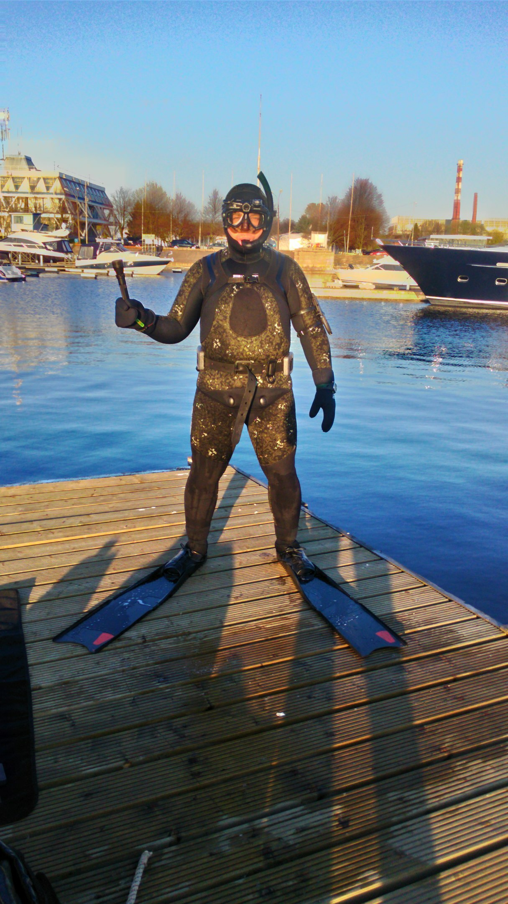
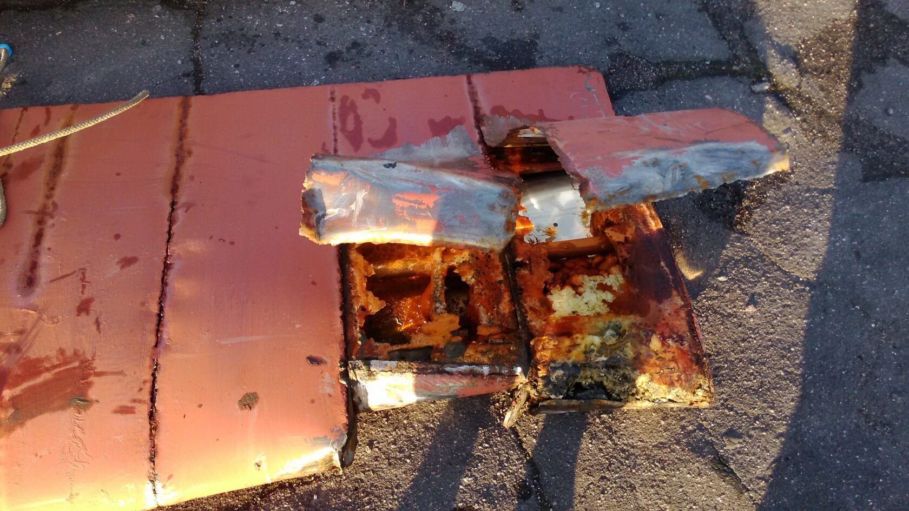
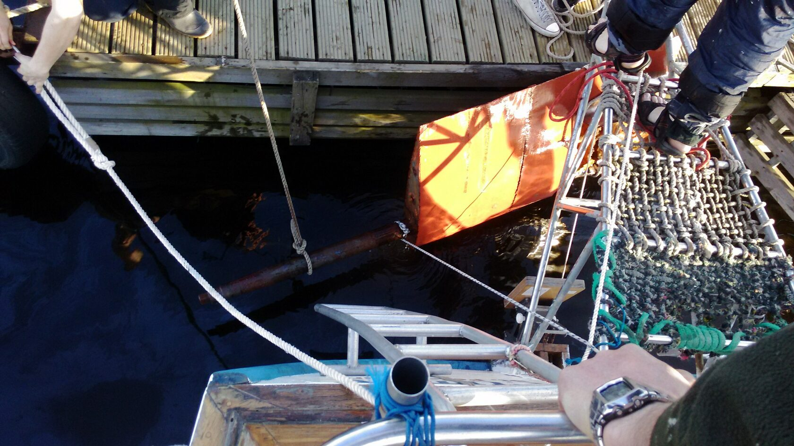
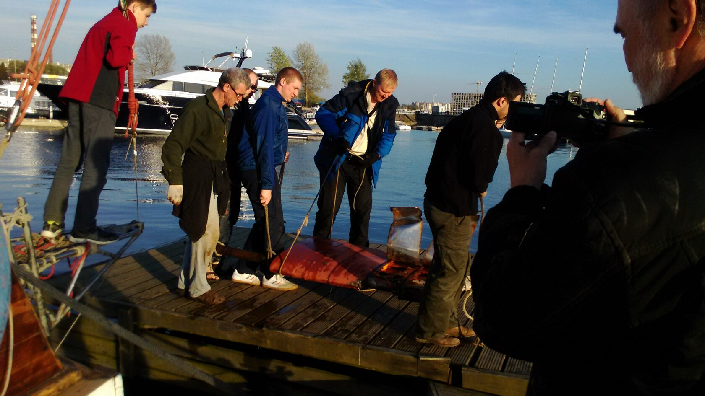
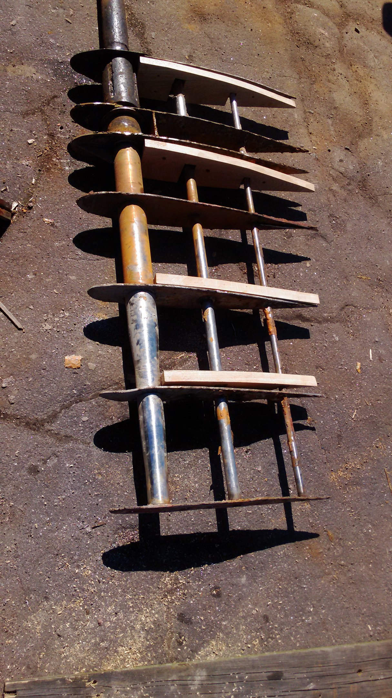
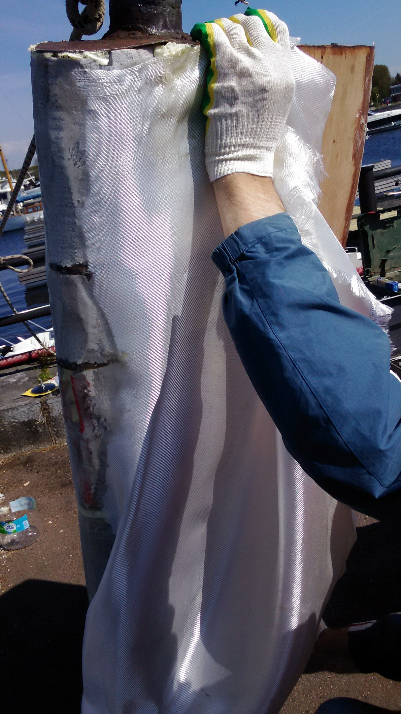
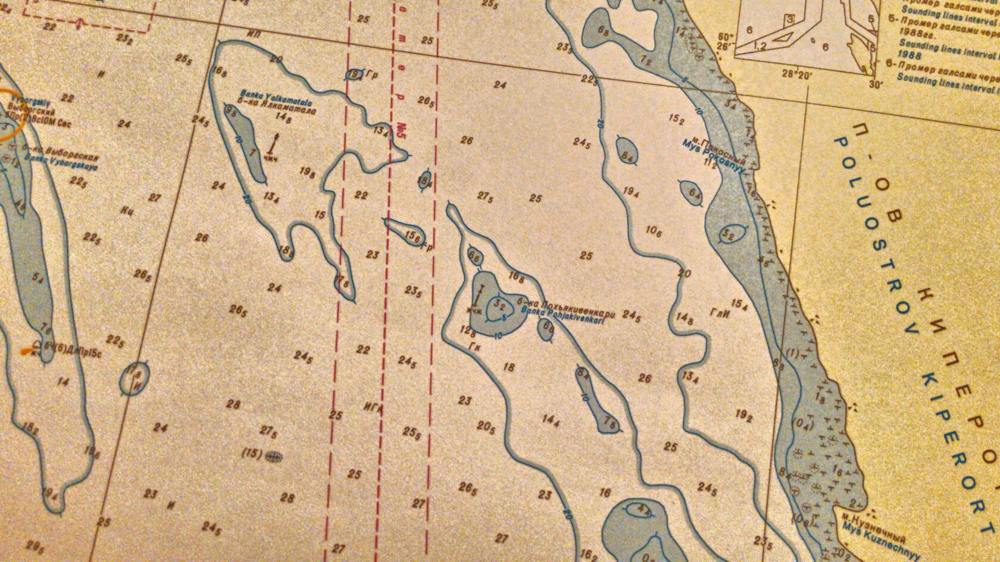
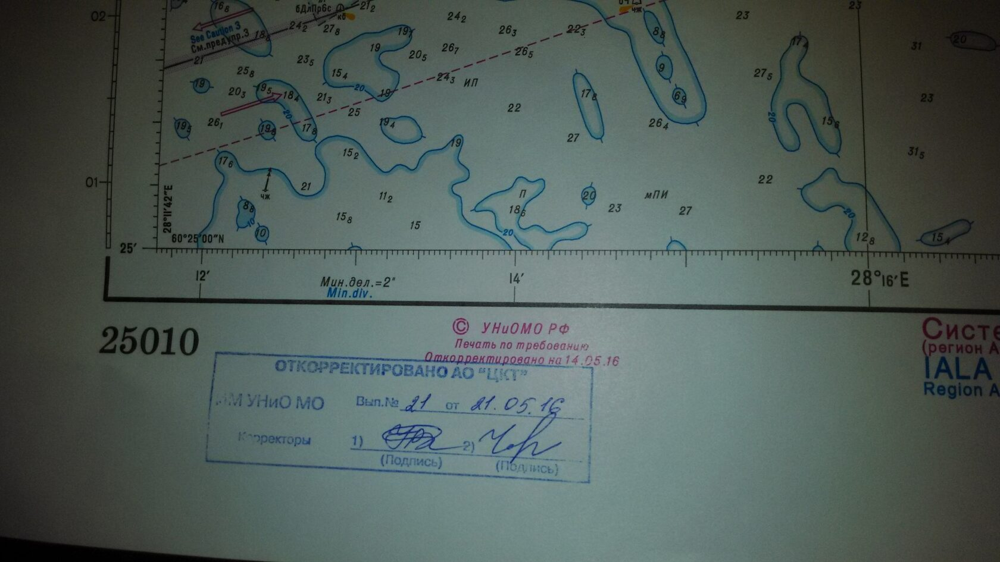

Наши происшествия
Случай № 7. Яхта Катти. Банка Похъякивенкари
«Вниманию судоводителей! Обнаружена навигационная опасность (затонувшее судно) на южной оконечности банки Похъякивенкари, в 1,77 мили к ESE от маяка Выборгский. Координаты опасности 60º31,13 N, 28 º26,03 E. Глубина над опасностью 0,7-1 метр (возможны и более высокие выступающие части). Не обставлена. Обнаружена собственным килем, на нашей карте представлена как банка с отличительной глубиной 3,2 м.»
Так выглядели сообщения в социальных сетях, которые мы дали, чтобы хоть как-то предупредить судоводителей маломерных судов об опасности.
Яхта Катти 1 мая 2016 года шла из Петербурга в Выборг. Стояла прекрасная майская холодная погода, светило солнце. Дул легкий зюйд-ост, около 2 баллов, волнение моря 1 балл, так как с запада открытое море дышало небольшой зыбью. Около 11 часов утра мы вышли из пролива Бьеркезунд и направлялись в Выборгский залив, к острову Вихревой курсом фордевинд относительно ветра и скоростью около трех узлов под гротом и генуей, вынесенных «на бабочку». Известно, что при таком положении парусов, маневренность яхты сильно ограничена – надо идти строго фордевинд. Прямо по курсу - упомянутая банка с глубиной 3,2 метра, осадка Катти 2 метра, курс менять не хочется. На лодке боевой, молодой экипаж из десяти человек, соскучившихся по морю за долгую зиму.
Мне кажется, я стал понимать, что делает моряков людьми суеверными - это необъяснимые здравым смыслом закономерности. Например, если все идет хорошо, погода радует, и вы готовы расслабиться – берегитесь – завистливые и коварные морские боги на ровном месте подкинут проблем! И еще каких!
Неожиданный удар фальшкилем о жесткое неподвижное препятствие нарушил наши планы. Все наше навигационное оборудование говорило нам о том, что мы находимся на банке Похъякивенкари. Банка расположена в нескольких кабельтовых от фарватера, должна быть обставлена вестовым буем. Вестовый буй, конечно, отсутствует.

Вода была достаточно прозрачная и мы смогли рассмотреть под яхтой что-то железное и ржавое. Яхта попала в капкан каких-то металлических конструкций. Когда убрали паруса и дали задний ход двигателем, винт обо что-то звонко стукнулся и двигатель заглох. Очевидно, винт не мог свободно вращаться из-за подводного препятствия. Радовало то, что погода была спокойная, однако даже на такой легкой зыби корпус содрогался от ударов.
Немедленно подготовили шлюпку и отправились на ней завозить становой якорь. Поскольку вокруг банки были двадцатиметровые глубины, были использованы все сто метров якорного каната. Попытка стащить Катти под углом 90 градусов от курса перед посадкой на мель не удалась. Но когда якорь был завезен строго по корме и при использовании всех четырех стаксельных лебедок, пришел успех, яхта закачалась на свободной воде.
Контроль трюмов не выявил поступления воды. Двигатель завелся, был дан ход и лодка пошла. Было принято решение вернуться в Приморск, в марину и в спокойных условиях осмотреть повреждения. На ходу обнаружили некоторый дисбаланс в движительно-рулевом комплексе, но признали его не критичным, и все-таки провели остаток выходных в Выборгском заливе.
По возвращении на базу в Центральный яхт-клуб Петербурга, приступили к более тщательному изучению последствий аварии.

Осмотр подводной части корпуса дал нам информацию, что наиболее значительные повреждения получило перо руля, и оно нуждается в немедленном ремонте.
Вот так оно выглядело над водой - стало понятно, почему яхта плохо управлялась.

Конструктивные особенности крепления баллера на Катти позволили провести операцию извлечения пера руля из корпуса без дорогостоящего подъема яхты из воды.


Вся команда работала дружно и слаженно, и через неделю у нас было уже новое перо руля. К счастью, ни баллер, ни нервюры серьезно не пострадали.

А металлическую обшивку пера руля заменили на стеклопластиковую по причине большей технологической доступности для нас на тот момент.

С этим пером лодка благополучно проходила еще много лет до своей продажи.
Мы также убедились, что на карте 25010 со свежей корректурой банка Похъякивенкари по- прежнему представлена, как отличительная глубина 3,2 м.


Мы обновили лицензионные электронные карты C-MAP в нашем картплоттере. И там над банкой глубина 3,2 м.
Осознавая, какую смертельную опасность таит в себе эта ошибка на карте, от имени капитана яхты Катти было отправлено официальное письмо в Управление Навигации и Океанографии. Через три месяца состоялся телефонный звонок из этой организации с уточняющими вопросами. Но на этом дело и закончилось. В течении шести месяцев после обращения, мы регулярно проверяли Извещения Мореплавателям на сайте Министерства Обороны по поводу банки Похъякивенкари, но корректуры глубины издано не было. Далее следить за Извещениями Мореплавателям по этому поводу мы забросили. Но и на данный момент на всех наших картах, лицензионных и не очень, глубина на этой банке не откорректирована.
После того как мы зимой изложили эту историю на собрании яхтенной общественности, организованной Мореходными классами, к нам подошел юрист, специалист по морскому праву и поведал, что отстаивал в суде интересы гидрографического судна, налетевшего на это же препятствие несколько лет назад. Суд он выиграл, компенсация ущерба ему была выплачена. Однако банка, находящаяся в полутора кабельтовых от фарватера, с наименьшей глубиной около 1,5 метра не обставлена до сих пор. На картах глубина над ней по-прежнему - 3.2 метра. Банка Похъякивенкари лежит на весьма оживленной трассе маломерного флота, на пути многих яхт и катеров, следующих из Выборга в Петербург и обратно. Не все могут отделаться так же легко, как посчастливилось тогда нам.
Почему мы решили, что это затонувшее судно? Во-первых, мы сами видели очертания металлических конструкций. Во-вторых, в интернете видели информацию некоторых энтузиастов, которые исследовали это место с помощью сонаров. В-третьих, старожилы говорят, что в свежую погоду были даже видны кнехты из-под воды.
Вполне возможно, что сейчас препятствия уже нет. Банка Похъякивенкари по сути это подводная сопка с крутыми склонами. Может сильный шторм сдернул то, что на ней лежало в глубину. Интересно было бы проверить.
Мы обходим это место стороной, разумеется. У нас теперь есть поговорка: «помни о Похъякивенкари». Это означает, что, если вокруг двадцатиметровые глубины и есть баночка с трехметровой глубиной, лучше ее обойти.